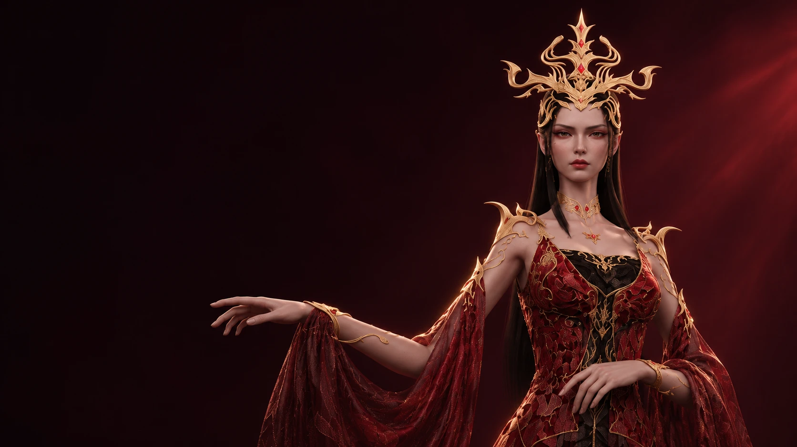
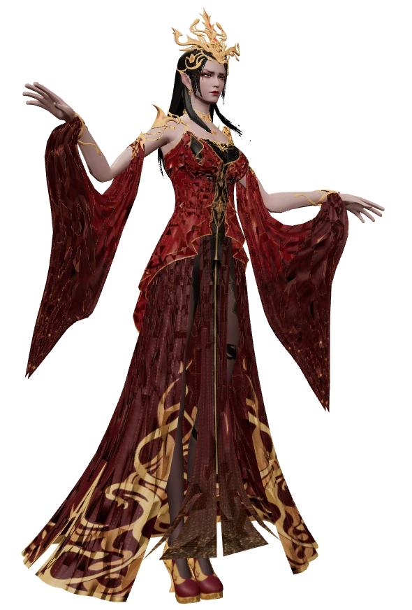

让手势看起来自然
从手部设计稿到实模四视图，调顺高位手的前臂与手腕，拉长四指，并调整拇指对掌。抬手时，腕线与指节自然接续。

点选动作，拖动转身，用滚轮或双指拉近。

使用方向键旋转视角，加号和减号缩放。舞台下方可以点选动作。
七段舞台录屏，从动作起势一直录到美杜莎回到待机。
播放器暂时无法载入。可用下方链接直接打开视频。
喜
微笑渐起，肩臂舒展，视线随着手势转动，再缓缓收回。
录屏采集自本站三维舞台，使用全屋智能家居构建 248 的同源角色与动作。
制作方法
把手部、表情与衣发的调整做进同一套骨骼，再用原生窗口检验最终表现。
从手部设计稿到实模四视图，调顺高位手的前臂与手腕，拉长四指，并调整拇指对掌。抬手时，腕线与指节自然接续。
先编排躯干、肩肘和指尖，再给发梢、长袖、裙摆分别安排跟随。动作幅度增加时，每一层仍有自己的节奏。
从 Blender 导出 GLB，在原生桌宠渲染路径里验证动作。表演结束，角色可以回到待机，等待下一次互动。
在 macOS「我的 → 私人助理」中，外观、声线与人设可分别切换。动作跟随当前桌宠，聆听和说话等状态由会话触发。
按镜头、字幕和说话人切点定位《斗破苍穹·三年之约》中的彩鳞对白。分离背景声后，把单人短段与对应文本配对，用本机 TTS 合成新句。逐项验证播放完成、缺参考时的回退，以及恢复素材后能否重新生效。
把彩鳞的冷静、果断与护族担当转成原创现代助理对话。单独定义显示身份、唤醒词与对话风格。切换声线后回读人设，使用只读查询和带否定的指令检验设备分流。
保留认可的网格、纹理和蒙皮，新增 14 个片段，包括三种常态、七种轮换动作和四种短表情。会话优先于自动轮换。逐个点播，检查全身与半身构图，以及播完回到当前状态。
构建 240 在原生窗口确认三项选择，并完成本机合成播放。构建 248 验证新版桌宠动作。真人麦克风唤醒、用户听感和逐音节口型仍待单独验证。
获取数字人技能套装 ↓Codex 技能
macOS 解压后打开 install.command，再开一个 Codex 对话。